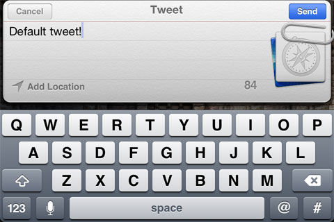

UDN
Search public documentation:
TwitterIntegration
日本語訳
中国翻译
한국어
Interested in the Unreal Engine?
Visit the Unreal Technology site.
Looking for jobs and company info?
Check out the Epic games site.
Questions about support via UDN?
Contact the UDN Staff
中国翻译
한국어
Interested in the Unreal Engine?
Visit the Unreal Technology site.
Looking for jobs and company info?
Check out the Epic games site.
Questions about support via UDN?
Contact the UDN Staff
UE3 Home > PlatformInterface Framework > Twitter Integration
Twitter Integration
Overview
TwitterIntegration
TwitterIntegration class is the base class containing the functionality for connecting to and interacting with Twitter. It inherits from the PlatformInterfaceBase and makes use of the delegate system contained in that class. Each platform (PC, iOS, etc.) has its own subclass extending from TwitterIntegration that provides the implementation specific to that platform.
Functions
- Init - Event called by the engine to initialize the Twitter integration.
- CanShowTweetUI - Returns whether the user is allowed to use the integrated Twitter UI. On iOS, use of the Twitter UI requires the device to be iOS 5 or later and for the user to have authorized use of Twitter on the device. If the UI is not available, the TwitterRequest method can be used instead.
- ShowTweetUI [InitialMessage] [URL] [Picture] - Starts the process of sending a tweet, using the platform to show the UI. Returns true if the UI was displayed for the user to interact with (and a FID_TweetUIComplete delegate will be executed). If FALSE, you can use the TwitterRequest method to perform a manual tweet using the Twitter API
- InitialMessage - Optional. A string specifying the message to be displayed in the UI (which can then be edited by the user).
- URL - Optional. A string specifying a URL to attach to the tweet.
- Picture - Optional. A string specifying the name of a picture to add to the tweet. This should be an image stored locally on the current plaform. The platform subclass handles searching for the given image.
- AuthorizeAccounts - Starts the process for allowing the game to access the player's Twitter info. Requires the player to grant permissions to the Twitter app. Returns TRUE if the authorization process started and TID_AuthorizeComplete delegates will be called.
GetNumAccounts()should return a valid number of accounts after the delegates are called. - GetNumAccounts - Returns the number of Twitter accounts that were authorized by
AuthorizeAccounts(). - GetAccountName [AccountIndex] - Returns the display name of the Twitter account associated with the given index.
- AccountIndex - An
Intspecifying the index of the Twitter account to get the display name for.
- AccountIndex - An
- TwitterRequest [URL] [ParamKeysAndValues] [RequestMethod] [AccountIndex] - Sends a generic Twitter request using the Twitter API. See the REST API Resources Twitter API documentation page for a complete list of all valid URLs and parameters.
- URL - The URL for the request, can be http or https (if the current platform supports sending https)
- ParamKeysAndValues - An array of strings specifying the extra parameters to send. Separate keys and values: < "key1", "value1", "key2", "value2" >.
- RequestMethod - The
ETwitterRequestMethodto use to send the request.- TRM_Get - Send the request using the GET request method.
- TRM_Post - Send the request using the POST request method.
- TRM_Delete - Send the request using the DELETE request method.
- AccountIndex - An
Intspecifying the index of the Twitter account to send the request for.
ETwitterIntegrationDelegate enum defines the IDs for the types of delegates that can receive callbacks. Delegates can be assigned to each of these using the Platform Interface Delegates system.
- TID_AuthorizeComplete - Delegates assigned to this ID are executed when a response from the authorization process is received.
- bSuccessful - If TRUE, access to the player's Twitter account was granted.
- Data - Contains no data.
- TID_TweetUIComplete - Delegates assigned to this ID are executed when the Tweet UI is completed.
- bSuccessful - If TRUE, the Tweet UI completed successfully.
- Data - Contains no data.
- TID_RequestComplete - Delegates assigned to this ID are executed when a response from a Twitter request is received.
- bSuccessful - If TRUE, the request completed successfully with no errors.
- Data - Contains the response string from the web request.
Implementation Details
- Get a reference to the
TwitterIntegrationobject by calling the staticGetTwitterIntegration()of thePlatformInterfaceBaseclass. Then set up your delegates for the authorization, Twitter request, and Tweet UI callbacks and authorize the twitter accounts for the user(s), usually inPostBeginPlay()or some other initialization function depending on where you are placing the Twitter functionality.var TwitterIntegration Twitter; ... Twitter = class'PlatformInterfaceBase'.static.GetTwitterIntegration(); Twitter.AddDelegate(TID_AuthorizeComplete, OnTwitterAuthorizeComplete); Twitter.AddDelegate(TID_TweetUIComplete, OnTweetComplete); Twitter.AddDelegate(TID_RequestComplete, OnTwitterRequestComplete); Twitter.AuthorizeAccounts();
AuthorizeAccounts()will prompt the user to authorize the use of Twitter if they have not already authorized its use.
OnTwitterAuthorizeComplete,OnTweetComplete,OnTwitterRequestCompleteare just examples. These can be the names of any function matching the signature of thePlatformInterfaceDelegatedelegate.delegate PlatformInterfaceDelegate(const out PlatformInterfaceDelegateResult Result);
- To initiate the process of sending a tweet, call
CanShowTweetUI()on theTwitterIntegrationobject and either show the tweet UI usingShowTweetUI()or send the tweet manually usingTwitterRequest()if necessary.The tweet UI will be shown (if possible) to the user allowing them to edit the message.local array<string> KeyValues; if (Twitter.CanShowTweetUI()) { Twitter.ShowTweetUI("Tweeting from UE3", "http://www.epicgames.com", "Icon"); } else { KeyValues.AddItem("status"); KeyValues.AddItem("Tweeting from UE3"); Twitter.TwitterRequest("http://api.twitter.com/1/statuses/update.json", KeyValues, TRM_POST, 0); }

CloudPC.uc script of the UDKBase\Classes directory and can be tested by using the CloudGame gametype.